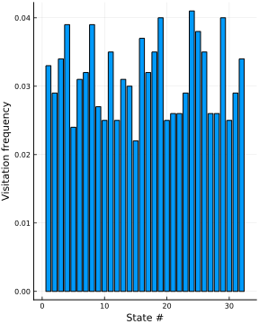

Simplex partitions
Simplex partitions are formed by performing a Delaunay triangulation of the points, forming a set of disjoint simplices entirely covering the point cloud.
Example
julia> using StateSpaceReconstruction
julia> using PlotsCreate a set of random points (just a few, so it doesn't take forever to plot the triangulation), and triangulate them.
julia> E = embed(rand(3, 20))
ERROR: UndefVarError: embed not defined
julia> tri = delaunaytriang(E)
ERROR: UndefVarError: E not definedjulia> plot_triang(E, tri, vertices = true);
ERROR: UndefVarError: plot_triang not defined